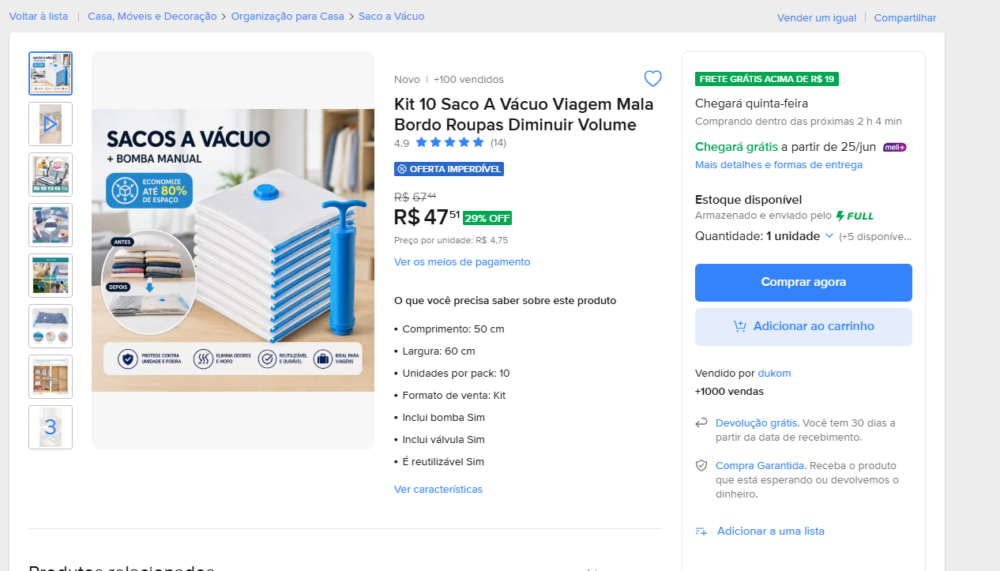

Difusão de Conhecimento em Cloud Services • Semana 2
Armazenamento de objetos escalável, seguro e de altíssima durabilidade
Diferente de blocos (HDs). Armazena arquivos como Chave (Caminho/Nome) e Valor (Dados binários).
Não há limite de espaço total. Armazene de bytes a **Petabytes** sem precisar provisionar storage antes.
Projetado para **99.999999999% (11 noves) de durabilidade**. Seus dados são replicados em no mínimo 3 AZs.
| Classe S3 | Frequência de Acesso | Tempo de Recuperação | Foco de Custo |
|---|---|---|---|
| S3 Standard | Frequente (Ativo) | Imediato (Milisegundos) | Custo padrão de armazenamento |
| S3 Standard-IA | Infrequente (Backups) | Imediato (Milisegundos) | Armazenamento barato, paga por leitura |
| S3 Intelligent-Tiering | Desconhecido / Variável | Imediato (Milisegundos) | Automação inteligente sem taxas extras |
| S3 Glacier Flexible | Arquivamento raro | De minutos a horas | Altíssima economia para retenção |
| S3 Glacier Deep Archive | Regulatório (1 ou 2x por ano) | 12 horas | O menor custo da AWS (centavos por GB) |
O Versioning protege contra exclusões acidentais mantendo o histórico de alterações. O Object Lock impede a deleção e modificação de arquivos (modelo WORM - contra Ransomware).
Por padrão, tudo no S3 é **100% privado**. O acesso é controlado via **Bucket Policies** (Políticas JSON anexadas ao bucket) e regras de **Block Public Access** global.
Mão na massa: Hospedando um site estático seguro no Amazon S3

index.html.s3:GetObject para o principal público ("*").Simulado interativo de questões focadas no Amazon S3 (SAA-C03)
Semana 2 concluída com sucesso!
Próxima Apresentação: Bancos de Dados com Amazon RDS
Experimente criar seu próprio site estático no S3 usando a Camada Gratuita da AWS.